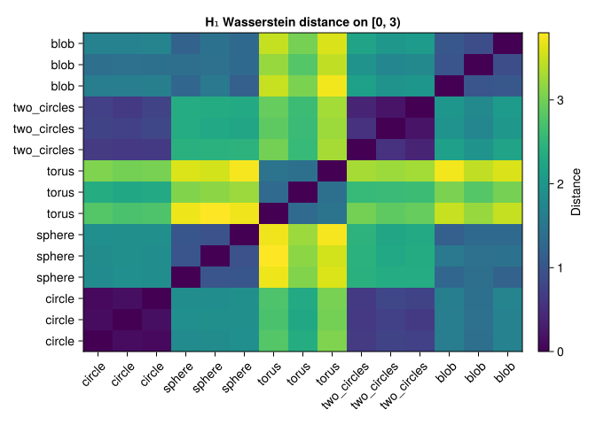

using CairoMakie
using MetricSpaces
using TDAPersistenceDiagrams
using TDARipserer
using Random
using Statistics17 Shape analysis and comparison
“The book of nature is written in the language of mathematics.”
— Galileo Galilei
How can we tell whether two shapes are similar? A persistence diagram gives us one answer: compare the way components, loops, or cavities appear across scales. It ignores translations and rotations when we use Euclidean distances, but it still sees geometry. Doubling a circle’s radius doubles its Rips birth and death scales. Choose whether that change matters before comparing the diagrams.
In this chapter we build a small library of noisy shapes, compare their \(H_1\) diagrams, and create shared persistence-image features. The aim is to understand what this representation keeps and what it loses, rather than to declare every shape recognizable from its barcode.
17.1 A reproducible shape library
Every sample below has 100 points and independent, seeded noise. Circles have radius 1; tori have major radius 2 and minor radius 0.6. Torus angles are uniform, which is convenient for this example but is not uniform sampling with respect to surface area.
function sample_shape(shape, n, seed; noise_level = 0.05)
rng = MersenneTwister(seed)
circle_points(k) = begin
θ = 2π .* rand(rng, k)
permutedims(hcat(cos.(θ), sin.(θ)))
end
points = if shape == :circle
circle_points(n)
elseif shape == :sphere
p = randn(rng, 3, n)
p ./ sqrt.(sum(abs2, p; dims = 1))
elseif shape == :torus
θ, φ = 2π .* rand(rng, n), 2π .* rand(rng, n)
r = 2 .+ 0.6 .* cos.(φ)
permutedims(hcat(r .* cos.(θ), r .* sin.(θ), 0.6 .* sin.(φ)))
elseif shape == :two_circles
hcat(circle_points(n ÷ 2), circle_points(n - n ÷ 2) .+ [3.0, 0.0])
elseif shape == :blob
0.5 .* randn(rng, 3, n)
else
error("Unknown shape: $shape")
end
EuclideanSpace(points .+ noise_level .* randn(rng, size(points)))
end
shapes = repeat([:circle, :sphere, :torus, :two_circles, :blob], inner = 3)
clouds = [sample_shape(s, 100, i) for (i, s) in enumerate(shapes)]
shape_names = string.(shapes)
comparison_scale = 3.0
diagrams = [ripserer(Rips(X; threshold = comparison_scale), dim_max = 1) for X in clouds]15-element Vector{Vector{PersistenceDiagram}}:
[100-element 0-dimensional PersistenceDiagram, 6-element 1-dimensional PersistenceDiagram]
[100-element 0-dimensional PersistenceDiagram, 5-element 1-dimensional PersistenceDiagram]
[100-element 0-dimensional PersistenceDiagram, 4-element 1-dimensional PersistenceDiagram]
[100-element 0-dimensional PersistenceDiagram, 26-element 1-dimensional PersistenceDiagram]
[100-element 0-dimensional PersistenceDiagram, 24-element 1-dimensional PersistenceDiagram]
[100-element 0-dimensional PersistenceDiagram, 23-element 1-dimensional PersistenceDiagram]
[100-element 0-dimensional PersistenceDiagram, 27-element 1-dimensional PersistenceDiagram]
[100-element 0-dimensional PersistenceDiagram, 20-element 1-dimensional PersistenceDiagram]
[100-element 0-dimensional PersistenceDiagram, 26-element 1-dimensional PersistenceDiagram]
[100-element 0-dimensional PersistenceDiagram, 2-element 1-dimensional PersistenceDiagram]
[100-element 0-dimensional PersistenceDiagram, 3-element 1-dimensional PersistenceDiagram]
[100-element 0-dimensional PersistenceDiagram, 4-element 1-dimensional PersistenceDiagram]
[100-element 0-dimensional PersistenceDiagram, 31-element 1-dimensional PersistenceDiagram]
[100-element 0-dimensional PersistenceDiagram, 29-element 1-dimensional PersistenceDiagram]
[100-element 0-dimensional PersistenceDiagram, 34-element 1-dimensional PersistenceDiagram]The samples have matched point counts, but the geometry and sampling densities differ. These differences can affect the diagrams as much as the number of holes does. For an application, record the units, metric, preprocessing, sample sizes, and filtration horizon along with the distances.
17.2 What to do with bars that survive the computation
A bar printed with death Inf in this calculation may simply survive the threshold 3.0. We have not observed its death; it is right-censored. Comparing the raw diagrams can give infinite distances if the counts of such bars differ. Replacing that infinity by an arbitrary number would change the meaning of the distance.
Here we make an explicit choice: compare only the scale window \([0,T)\), with \(T=3\). We cap every death at the same \(T\), keep the time lived inside the window, and discard intervals born at or after \(T\). A capped endpoint records the observation horizon, not a measured death. This creates finite signatures on a common window; it deliberately loses all information beyond that window.
function window_diagram(diagram, T)
T > 0 || throw(ArgumentError("T must be positive"))
pairs = [(birth(bar), min(death(bar), T)) for bar in diagram if birth(bar) < T]
PersistenceDiagram(pairs; dim = dim(diagram))
end
censored_example = window_diagram(PersistenceDiagram([(1.0, Inf)]; dim = 1), comparison_scale)
@assert birth(only(censored_example)) == 1.0
@assert death(only(censored_example)) == comparison_scale
h1 = [window_diagram(d[2], comparison_scale) for d in diagrams]
println("Bars still alive at T in each original H₁ diagram: ",
[count(bar -> !isfinite(bar), d[2]) for d in diagrams])Bars still alive at T in each original H₁ diagram: [0, 0, 0, 0, 0, 0, 0, 0, 0, 0, 0, 0, 0, 0, 0]Other defensible choices include computing far enough to observe all \(H_1\) deaths, or comparing finite and essential intervals separately. Merely dropping all censored bars would erase precisely the features that survived longest. Whatever policy you use, apply it consistently and report it.
17.3 Building a distance matrix
For a finite interval \((b,d)\), its cheapest match to the diagonal has \(L^\infty\) cost \((d-b)/2\). Consequently,
\[ W_1(D,\varnothing)=\sum_{(b,d)\in D}\frac{d-b}{2}. \]
The helper below uses this exact formula when one side is empty and the package’s matching algorithm otherwise. Making the empty case explicit also lets us check the answer by hand. Its inputs must be finite; a raw infinite interval requires an explicit policy first.
function finite_wasserstein1(left, right)
all(isfinite, left) && all(isfinite, right) ||
throw(ArgumentError("Apply an explicit finite-window policy first"))
isempty(left) && return sum(persistence(bar) / 2 for bar in right; init = 0.0)
isempty(right) && return sum(persistence(bar) / 2 for bar in left; init = 0.0)
Wasserstein(1, Inf)(left, right)
end
# A distance we can check by hand: lifetimes 2 and 1 cost 1 + 0.5.
empty_diagram = PersistenceDiagram(Tuple{Float64, Float64}[]; dim = 1)
toy_diagram = PersistenceDiagram([(0.0, 2.0), (1.0, 2.0)]; dim = 1)
@assert finite_wasserstein1(toy_diagram, empty_diagram) == 1.5
@assert finite_wasserstein1(empty_diagram, toy_diagram) == 1.5
@assert finite_wasserstein1(empty_diagram, empty_diagram) == 0.0
@assert finite_wasserstein1(PersistenceDiagram([(0.0, 2.0)]; dim = 1),
PersistenceDiagram([(0.0, 3.0)]; dim = 1)) == 1.0
n_shapes = length(h1)
dist_matrix = [finite_wasserstein1(h1[i], h1[j]) for i in 1:n_shapes, j in 1:n_shapes]
fig = Figure(size = (750, 600))
ax = Axis(fig[1, 1], title = "H₁ Wasserstein distance on [0, 3)",
xticks = (1:n_shapes, shape_names), yticks = (1:n_shapes, shape_names),
xticklabelrotation = π / 4)
hm = heatmap!(ax, dist_matrix)
Colorbar(fig[1, 2], hm, label = "Distance")
fig┌ Warning: Found `resolution` in the theme when creating a `Scene`. The `resolution` keyword for `Scene`s and `Figure`s has been deprecated. Use `Figure(; size = ...` or `Scene(; size = ...)` instead, which better reflects that this is a unitless size and not a pixel resolution. The key could also come from `set_theme!` calls or related theming functions. └ @ Makie ~/.julia/packages/Makie/UjJJY/src/scenes.jl:238

Look for small distances among repeated samples, then check the exceptions. Three samples per class are far too few to establish a reliable classifier, and matching point counts does not guarantee matching coverage of the underlying surfaces.
17.4 What the distances capture
These are the Betti numbers of the ideal underlying spaces, not a promise about a sparse Rips computation:
| Underlying space | \(\beta_0\) | \(\beta_1\) | \(\beta_2\) |
|---|---|---|---|
| Circle | 1 | 1 | 0 |
| Sphere surface | 1 | 0 | 1 |
| Torus surface | 1 | 2 | 1 |
| Two disjoint circles | 2 | 2 | 0 |
| Solid ball (model for a blob) | 1 | 0 | 0 |
Using only \(H_1\) discards component and cavity information. A sphere surface and a ball can therefore have similar signatures despite being topologically different. Two circles and a torus also share the same ideal \(\beta_1\), but their bar lengths can differ because their geometries differ. The finite cloud is discrete at scale zero and eventually becomes contractible in a complete Rips filtration; the interesting topology occupies intermediate scales.
Wasserstein distance is a metric on suitable finite persistence diagrams. Pulling it back to point clouds through a chosen diagram produces a pseudometric: distinct clouds can have identical diagrams and hence distance zero. Neither diagrams nor persistence images are complete shape invariants.
17.6 A noise experiment, with a measurable bound
Keep the sampling fixed and change only the perturbation. This separates sensitivity to coordinate noise from sensitivity to drawing another sample.
θ = 2π .* collect(0:99) ./ 100
base_circle = permutedims(hcat(cos.(θ), sin.(θ)))
base_h1 = window_diagram(ripserer(Rips(EuclideanSpace(base_circle);
threshold = comparison_scale), dim_max = 1)[2], comparison_scale)
noise_levels = [0.01, 0.05, 0.1, 0.2, 0.3]
rng = MersenneTwister(37)
perturbation = randn(rng, 2, 100)
for noise_level in noise_levels
noisy_points = base_circle .+ noise_level .* perturbation
noisy_h1 = window_diagram(ripserer(Rips(EuclideanSpace(noisy_points);
threshold = comparison_scale), dim_max = 1)[2], comparison_scale)
max_displacement = maximum(sqrt.(sum(abs2, noisy_points .- base_circle; dims = 1)))
println("noise = ", noise_level,
"; max displacement = ", round(max_displacement; digits = 3),
"; W₁ = ", round(finite_wasserstein1(base_h1, noisy_h1); digits = 3),
"; bottleneck = ", round(Bottleneck()(base_h1, noisy_h1); digits = 3))
endnoise = 0.01; max displacement = 0.028; W₁ = 0.036; bottleneck = 0.036
noise = 0.05; max displacement = 0.141; W₁ = 0.186; bottleneck = 0.143
noise = 0.1; max displacement = 0.282; W₁ = 0.465; bottleneck = 0.301
noise = 0.2; max displacement = 0.565; W₁ = 1.056; bottleneck = 0.658
noise = 0.3; max displacement = 0.847; W₁ = 1.504; bottleneck = 0.845For the diameter convention used by Rips, moving every point by at most \(\delta\) changes pairwise distances by at most \(2\delta\). The corresponding bottleneck stability bound controls shifts of the diagram (Chazal et al. 2014). It does not say the measured distance must rise monotonically with noise. Wasserstein distance additionally accumulates many short bars, so its behavior depends on feature counts. Neither bound establishes statistical significance; compare with an appropriate null model if that is the question, as in the uncertainty chapter.
17.7 Predict before running
- What happens to Rips intervals if all coordinates are multiplied by two?
TipAnswer
Birth and finite death scales double. A fixed numerical threshold now observes a different relative scale window. Normalize size first only if size is irrelevant to your scientific question.
- If a diagram has one interval \([1,5)\), what is its \(W_1\) distance to the empty diagram?
TipAnswer
It is \((5-1)/2=2\), the cost of matching the point to the diagonal. An empty diagram is a legitimate signature, not an error requiring an arbitrary fallback distance.
- Can a perfect classifier on these persistence images identify every possible shape?
TipAnswer
No. The chosen \(H_1\) signature omits \(H_0\) and \(H_2\), different clouds can share a diagram, and vectorization loses further detail. Good performance on a small library is evidence about that library and preprocessing pipeline.
The useful workflow is now concrete: choose the geometry and scale window, compute diagrams, state how censoring is handled, fit shared feature coordinates, and evaluate on samples that did not fit the transformation.